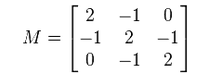
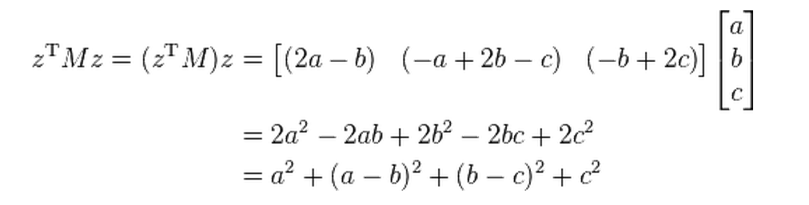
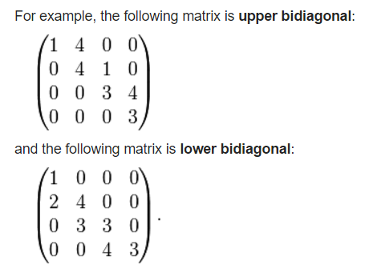

矩阵家族成员非常多，本文主要记录了我遇到过的矩阵(前面的文章所提到的矩阵，在这里就不重复列举了)。以后见识了新的矩阵时，会继续扩充本文。
(以下知识均查阅了wikipedia。单词的中文翻译查的是有道词典。)
余子式、代数余子式、代数余子式矩阵 Minor、Cofactor、Cofactor Matrix
wiki: https://en.wikipedia.org/wiki/Minor_(linear_algebra)
在wiki中余子式被叫做minor。minor不是一个独立的概念，当把一个方阵A中的第i行、第j列去掉后，剩余的元素组成的n-1阶方阵的行列式值，就是Minor。
Minor的记号是: \( M_{ij} \)，是一个行列式值。 而Cofactor(中文是叫代数余子式？)的记号是: \( C_{ij} \)，公式是:\( C_{ij} = (-1)^{i+j}M_{ij} \)
(个人建议，一切记法以wiki为准，抛弃国内中文教材的记法和中英对应关系吧，太容易混乱了)
余子式矩阵Cofactor Matrix的定义：
由方阵A的所有代数余子式\( C_{ij} \)组成的矩阵叫做余子式矩阵，记为C，公式为：
\[ C = \left[ \begin{matrix} C_{11}&C_{12}&\ldots&C_{1n}\\ C_{21}&C_{22}&\ldots&C_{2n}\\ \vdots \ \ \ \ &\vdots \ \ \ \ &\vdots \ \ \ \ &\vdots \ \ \ \ \\ C_{n1}&C_{n2}&\ldots &C_{nn}\\ \end{matrix} \right] \]
伴随矩阵 Adjugate Matrix
wiki: https://en.wikipedia.org/wiki/Adjugate_matrix
In linear algebra, the adjugate, classical adjoint, or adjunct of a square matrix is the transpose of its cofactor matrix. The adjugate has sometimes been called the "adjoint", but today the "adjoint" of a matrix normally refers to its corresponding adjoint operator, which is its conjugate transpose.
注意：伴随矩阵在我大学的课本里用的记号是A^{}，然而wiki是用adj(A)来表示伴随矩阵，A^{}表示的是共轭转置矩阵( conjugate transpose)。
公式：
\[ adj(A) = C^{T} \]
从公式可以发现，伴随矩阵就是代数余子式矩阵的转置。
共轭(转置)矩阵 Conjugate Transpose Matrix
公式上的定义：
\[ A^{*} = (\overline {A})^{T} \]
A上面的横线表示对矩阵中的元素的复数部分取反(类似复数的上横线)。
回想下共轭复数的定义，可以发现，矩阵的共轭，还需要再转置一下，很很大的一个不同点。
共轭矩阵还有其他表达形式：
\[ A^{\dagger } = A^{*} = A^{H} \]
厄米特矩阵 Hermitian matrix
厄米特矩阵也称为self-adjoint matrix，中文是：自伴矩阵、自共轭矩阵、自伴随矩阵。
厄米特矩阵必须满足下面的性质:
\[ A = A^{*} \]
即，A等于A的共轭矩阵时，A是一个厄米特矩阵。
单式矩阵 Unitary matrix
其他名称：酉矩阵/幺正矩阵。
看名字有点像单位矩阵(Unit matrix)，但是公式上的定义是这样子的：
\[ U^{*}U = I \]
即：如果矩阵的共轭乘以矩阵自身等于单位矩阵，那么它是一个单式矩阵。
正定矩阵 Positive Definite Matrix
定义比较复杂，我翻译下wikipedia的定义吧：
一个对称的n阶实数矩阵M，设元素不全为0的列向量为z，当所有这样的z满足\( z^{T}Mz > 0\)时，M是正定矩阵。
根据定义，可以知道单位矩阵I是正定的；
贴上wiki的例子来帮助理解：

设M的z为(a,b,c)，则有：

这个式子的结果显然是非负的，且当a=b=c=0时，这个式子才等于0，所以满足正定矩阵的条件。
此外，正定矩阵还有另外一个“间接”的定义：如果一个矩阵的所有特征值都是正数，那么这个矩阵是正定矩阵。要通过这个定义判断一个矩阵是不是正定矩阵，需要先知道这个矩阵的所有特征值。
半正定矩阵 Positive Semi-Definite
参考正定矩阵，半正定矩阵的定义公式是:\( z^{T}Mz >= 0\)。
半正定矩阵的“间接”的定义：如果一个矩阵的所有特征值都是正数或0（非负），那么这个矩阵是半正定矩阵。
负定矩阵 Negative Definite Matrix
参考正定矩阵，负定矩阵的定义公式是:\( z^{T}Mz < 0\)。
负定矩阵的“间接”的定义：如果一个矩阵的所有特征值都是负数，那么这个矩阵是半正定矩阵。
半负定矩阵 Negative Semi-Definite Matrix
参考正定矩阵，负定矩阵的定义公式是:\( z^{T}Mz <= 0\)。
半负定矩阵的“间接”的定义：如果一个矩阵的所有特征值都是负数或0（非正），那么这个矩阵是半正定矩阵。
厄米特矩阵的正定矩阵
参考正定矩阵，厄米特矩阵的正定矩阵的定义公式是:\( z^{*}Mz > 0\)，注意，算出来的值必须是实数，不能是复数。
规范化矩阵 Normal Matrix
又名：正规矩阵、正规阵、规范矩阵。
wiki:https://en.wikipedia.org/wiki/Normal_matrix。
当矩阵A满足下面的等式时，A是规范化矩阵:
\[ A^{*}A = AA^{*} \]
( \(A^{*}\) 代表A的共轭转置矩阵 )
双对角矩阵 Bidiagonal matrix
一图以言之:

(from wiki)
wiki:https://en.wikipedia.org/wiki/Bidiagonal_matrix
格拉姆矩阵 Gramian matrix
设矩阵X：
\[ X = \left[ \begin{matrix} \vec X_{1}&\vec X_{2}&\cdots &\vec X_{n}\\ \end{matrix} \right] \]
则Gramian matrix为：
\[ G = X^{T}X \]
性质：
G是positive semi-definite matrix正半定矩阵
G的行列式非0时，X是线性无关的（充分必要）（可用来判定X是否线性无关，很重要）
协方差矩阵 Covariance matrix （或离差矩阵dispersion matrix）
先给出协方差(covariance)公式：
\[ cov(X,Y) = \frac { \sum ^{n} _{i=1}(X_{i} - \overline {X})(Y_{i} - \overline {Y}) }{n-1} = E[(X - E[X])(Y - E[Y])] \]
协方差是一个测量2个变量关联性程度的方法。当变量数目多于2时，任意2个变量之间的协方差的集合就构成了协方差矩阵C：
\[ C = \Sigma _{ij} = cov(X_{i},X_{j}) = E[(X_{i} - E[X_{i}])(X_{j} - E[X_{j}])] \]

(图片来源：wikipedia)
博主将十分感谢对本文章的任意金额的打赏^_^